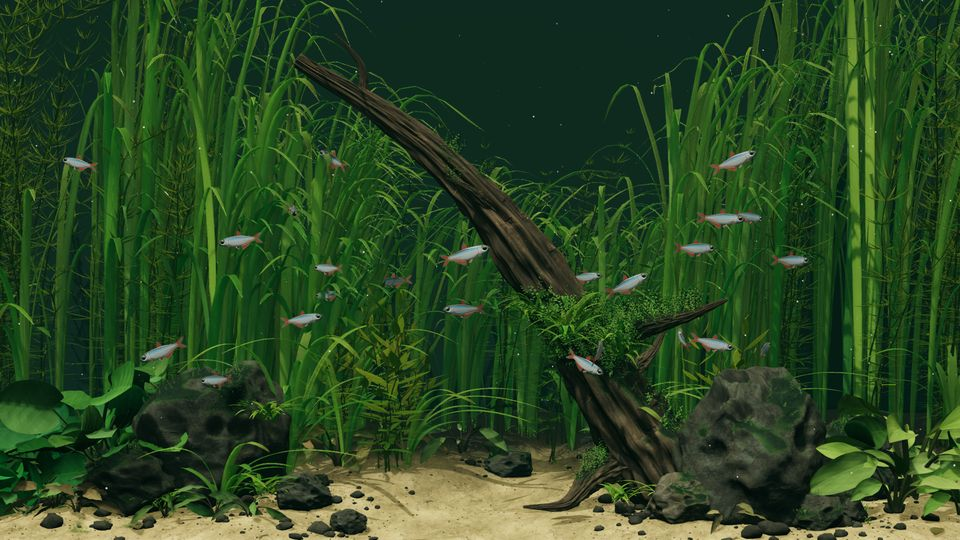
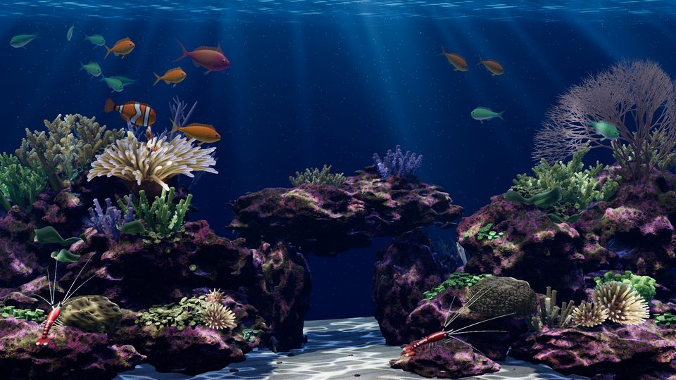
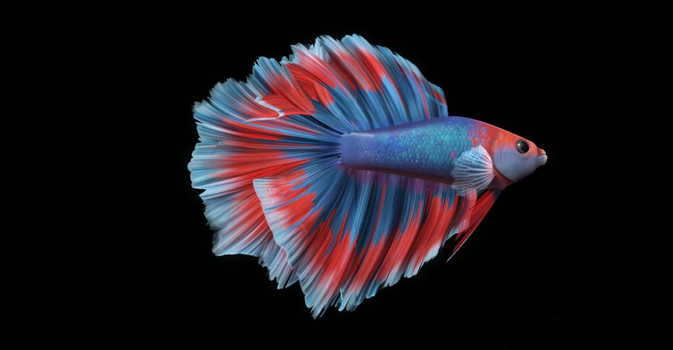
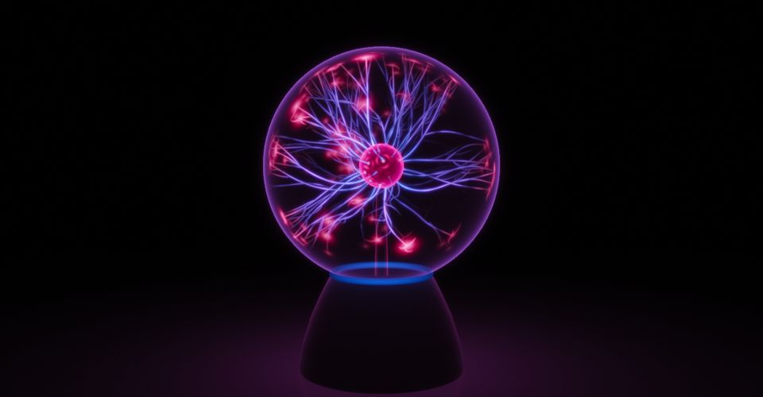
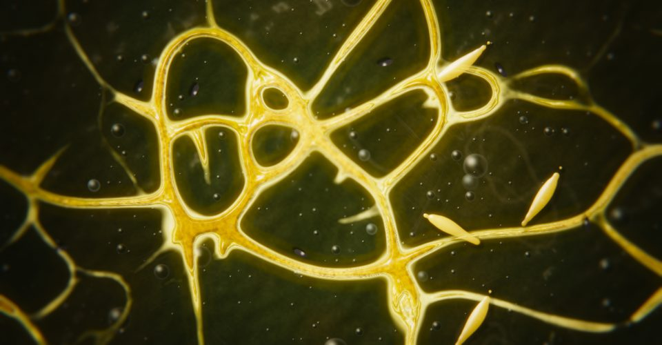
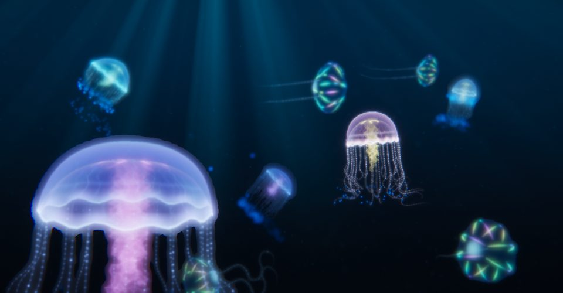
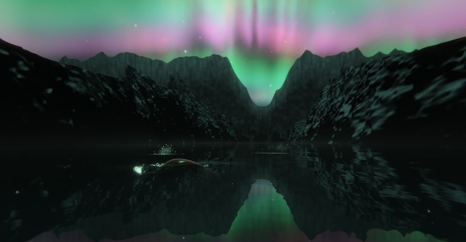
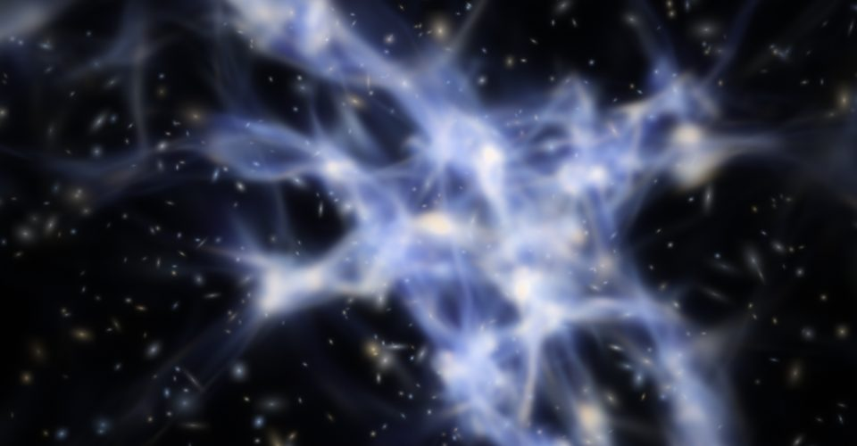

How a few thousand lines of code become a living world
Riverbed, Coral reef, Betta and Plasma globe look like footage, and so do the four worlds added in this port: Slime mould, Pelagic, Aurora fjord and Cosmic web. All eight are equations evaluated 30 to 60 times a second on your graphics card. There are almost no 3D models and very few photographs in them, and the four newer worlds load no image, model or data files at all. This page shows the layers they share, then the specific trick each one is built around. Every number below was read from the source, and the key ones were re-checked against it.
The principle: fake the cue, not the physics
A frame has about 16 to 33 milliseconds. A real renderer would trace billions of light paths through water. These scenes instead ask, for each visual effect, "what is the smallest formula that produces the same cue to a human eye?" Then they evaluate that formula per pixel or per vertex.
The pattern repeats everywhere: take a real law, keep its shape, drop what the eye cannot tell apart. Water dims red first, so use exp(-k·distance). Light focuses where a wavy surface curves, so compute curvature instead of tracing rays. A lens blurs by depth, so use the thin-lens formula on each primitive. The results are approximations, and the code usually says so in its comments.
Every frame runs this chain. Steps 3 to 6 run on the GPU, and step 2 is generated at startup or bent by vertex shaders each frame. Step 1 runs in JavaScript (in Slime mould and Aurora fjord part of it also runs as GPU passes on textures) and is kept separate so it behaves identically at any frame rate.
The layers all eight scenes share
Seven ideas appear in all eight scenes, even though they look nothing alike. The older four (Riverbed, Coral reef, Betta, Plasma globe) are the original author's code. The newer four (Slime mould, Pelagic, Aurora fjord, Cosmic web) were written for this port to the same contract, so they share the host hooks, the quality governor and the fixed-step loop, and each picked its own rendering tricks.
The world is generated, not modelled
No scene loads a 3D model file. Bodies, plants, corals and rocks are built from formulas at startup. Where a scene does use image data, it is small and bounded: Riverbed loads rock, wood and sand textures (three JPG diffuse and normal pairs); Coral reef loads textures and two binary files that were themselves computed offline by Python scripts; Betta and Plasma load nothing at all, and neither do the four newer scenes: their images, noise, targets and meshes are all computed at start-up.
Randomness is seeded. scenes/shared/random.js is a 32-bit generator (mulberry32 family, default seed 7731), so a given seed always builds the same world. That is what allows tests to assert things like "fish never overlap" without a GPU.
Three.js is a thin wrapper; the look is hand-written GLSL
Three.js 0.180 supplies vectors, cameras and the WebGL2 plumbing. The appearance comes from shader code, small programs that run once per vertex or per pixel. Across all eight scenes, three things appear: custom ShaderMaterial programs, a hand-written hash or noise function (in Cosmic web only a hash, for dither), and half-float HDR render targets. Everything else varies.
| Technique | River | Reef | Betta | Plasma | Slime | Pelagic | Aurora | Cosmos |
|---|---|---|---|---|---|---|---|---|
| Custom GLSL shaders | yes | yes | yes | yes | yes | yes | yes | yes |
| Hand-rolled noise / hash in GLSL | yes | yes | yes | yes | yes | yes | yes | hash only |
| HDR half-float render target | yes | yes | yes | yes | yes | yes | yes | yes |
| GPU instancing | yes | yes | pellets | segments | yes | yes | particles | no |
| Stock PBR material patched with shader hooks | yes | yes | no | no | no | no | no | no |
| Shadow maps | yes | static only | no | no | no | no | no | no |
| Three.js fog | yes | no | no | no | no | no | no | no |
| Shared post-processing module | yes | yes | own chain | own chain | own chain | own chain | own chain | own chain |
| Volumetric ray-march | no | yes | no | no | no | no | yes | no |
| Depth of field | no | no | full pass | per primitive | full pass | full pass | no | per sprite |
| Bloom / glow | no | no | glow | 6-level pyramid | pyramid | 6-level pyramid | pyramid | 6-level pyramid |
Source: a feature-by-scene read of each scene's src/ folder; see the per-scene sections for line references. "Own chain" means the scene has its own depth-of-field, bloom and output passes and does not import scenes/shared/postprocessing.js. Slime mould and Aurora fjord also run a GPU simulation on ping-pong textures; none of the older four do.
Light is computed in linear HDR, then compressed once
Lighting is done in linear, high-dynamic-range values where a highlight can be 10 times brighter than white. A final pass squeezes that into what a monitor can show using a filmic curve. This is why sunlit edges roll off smoothly instead of clipping.
Riverbed and Coral reef use Three.js's ACES filmic tone mapping (exposures 1.17 and 1.08). Betta, Plasma and all four newer scenes do it in their own output shader. Plasma uses the well-known ACES fit, and the newer scenes use the same fit:
All of them then apply a gamma of about 1/2.2 and a small dither (plus or minus 1/255) so dark gradients do not show banding.
river/src/main.js:73, reef/src/main.js:35, plasma/src/shaders.js:346-375, betta/src/shaders.js:138-145
Simulation and drawing are separate loops
Seven scenes (three of the older four, and all four newer ones) advance their simulation in fixed 1/60 second steps, at most 6 catch-up steps per frame, independent of how often they draw. Riverbed splits elapsed time into equal sub-steps of about 1/60 s instead. Either way, a fish behaves the same at 20, 30 or 60 fps, and a test can run 120 seconds of fish behaviour with no graphics at all.
The drawing loop (shared/frame-loop.js) is demand-driven. When a scene is paused or hidden there is no animation callback at all, so it costs essentially nothing. Below the screen's refresh rate it sleeps on a timer until about 3 ms before the next deadline, instead of waking 60 times a second to throw frames away. Elapsed time per frame is capped at 0.1 s so a stall cannot teleport the simulation.
A performance governor trades pixels for frames
| Profile | Frame rate | Pixel budget | Device pixel ratio cap |
|---|---|---|---|
eco | 20 fps | 1.05 million | 1 |
balanced (browser default) | 30 fps | 1.8 million | 1.25 |
detail | 60 fps | 3 million | 1.5 |
native (the wallpaper) | 60 fps | 16 million | none; falls back to balanced on battery |
On battery the frame rate is capped at 30 and the resolution scaled by 0.9. Reef, Betta, Plasma and all four newer scenes also watch themselves: if a smoothed CPU cost per frame exceeds 85% of the frame budget (or a frame takes more than 1.65 times its budget) for over 80 samples, resolution steps down by 0.1, to a floor of 0.72. It never steps back up. The scenes render to their own target at a computed size, so hardware antialiasing and browser pixel-ratio scaling are switched off.
The newer scenes also change what they compute, not just how many pixels. On battery, native falls back to the balanced tier, and each of the four adapts to the tier (Pelagic's particle counts, Aurora fjord's water-simulation size and ray-march steps, Cosmic web's sprite sizes and bloom depth; Slime mould regrows its colony at the new size). Their sections give the per-tier numbers.
shared/render-policy.js:12-41; reef/src/main.js:129-133; betta/src/main.js:79-83; plasma/src/main.js:59-63; slimescape/src/main.js:76-79; pelagicscape/src/main.js:58-60; aurorascape/src/main.js:82-84; cosmoscape/src/main.js:90-92
The cursor is a physical object in the scene
Every scene turns a 2D mouse position into a 3D ray and intersects it with something: a plane in front of the tank glass (Riverbed at z = 2.6, Reef at z = 2.4), a camera-facing plane (Betta), or a sphere just outside the glass (Plasma, radius 1.16 = glass 1 + fingertip 0.16). That 3D point goes into the simulation, where it frightens fish, attracts a betta's gaze, or acts as a grounded conductor. Pointer speed matters: fast motion scares fish, slow motion only makes them give way.
The newer scenes use the cursor the same way, as something that disturbs a field and not an individual object: a lamp that the slime avoids and the slugs approach (Slime mould), a probe whose shear lights up plankton (Pelagic), a source of ripples that a curious whale may swim toward (Aurora fjord), and a point mass that bends light (Cosmic web).
Each scene carries its own host interface
For the wallpaper, every scene exposes the same five hooks (sceneRate, scenePower, scenePause, sceneFeed, plus pointer injection) so a native program can throttle it. This is the layer the Windows port plugs into; see the porting journey.
Riverbed: a planted tank, built from plant biology and fish ethology

Technique 1
A quarter-million-vertex meadow in a single draw call
Every leaf of every plant is baked once into one mesh: 373,792 vertices and 500,546 triangles at the default quality (measured by the repo's own budget test). One draw call, no per-frame cost for placement.
Grass blades are cubic Bezier curves swept into ribbons, 30 rows by 6 columns in the foreground and 20 by 2 at the back. Older leaves are longer, paler and brown at the tips. Species like Anubias and Cryptocoryne are built as petioles and blades swept along midribs.
Motion is done entirely in the vertex shader. Each vertex knows its root, its distance along the leaf s and a compliance. The displacement is a drag bend 0.09·s² / (1 + 0.06·s²) plus a travelling wave sin(t·0.95 − 1.05·s + phase) with a weaker second harmonic. The shading normal is tilted by the slope of that motion, and the same function runs in the shadow pass, so shadows sway with the leaves.
river/src/plants.js:146,250; foliage.js:15-50; tests/plant-budget.mjs
Technique 2
Leaves that glow green when backlit, with no textures
Leaf veins, midribs and mottling are procedural functions. Translucency uses alphaToCoverage on 4x multisampling, which turns a fixed alpha of 0.5 or 0.75 into sub-pixel coverage, so thin leaves blend without any depth sorting. A backlight term (0.55, 0.85, 0.30) · thinness adds light that has passed through the leaf. Specular is kept very low (0.07) because leaf and water refractive indices are similar.
river/src/foliage.js:56-126
Technique 3
Water as a light filter: absorption and focusing, hooked into every material
The code overrides the direct-light function of every patched material. Each light is multiplied by absorption, exp(-(0.020, 0.008, 0.012) · depth) measured from the surface at y = 10, and by a caustic-style focusing term built from four sine waves: focus = 1 / max(0.45, 1 − 0.25·depth·curvature·4). Where the simulated surface is concave, light concentrates; where convex, it thins. No caustic texture exists.
Because red decays fastest and green slowest, distance turns the scene green. The curves below are drawn from those constants, to scale.
Riverbed: fraction of each colour channel left at depth d, from surface (0) to 10 scene units. The constants are (R, G, B) = (0.020, 0.008, 0.012). Absorption is gentle; much of the green depth cue comes from the exponential fog (FogExp2 density 0.034, colour #16312a).
river/src/water.js:113-129; main.js:80
Technique 4
A current that every object feels
One flow field, a slow reversing term 0.34·sin(0.031t) plus three travelling sines, is written twice: in GLSL for plants and dust, and in JavaScript for fish and food pellets. Because both copies are the same equation, a leaf, a dust fleck and a pellet all lean the same way. It is scaled by a shelter factor: 0.3 near the sand rising to 1 by height 1.4, and another 0.35 inside grass beds. The slow term has a period of 2π/0.031, about 203 seconds, so the current swings back and forth over a few minutes.
river/src/water.js:29-37, 94-100
Technique 5
Fish: swimming computed in the vertex shader, behaviour from ethology
There are 24 bloodfin tetras. Each body is an 84 by 62 grid lofted from cross-section stations on a spline, with a modelled eye lens and mouth, and fins with 8 to 23 rays plus membrane. Proportions come from published morphometrics cited in the code comments.
The swimming bend is integrated along the spine inside the shader in 8 steps, using a travelling wave amp · along^1.35 · sin(phase − 7.5·s) plus turning curvature. The CPU writes only a few floats per fish per frame.
Skin is a patched physical material with procedural scales (a 34 by 11 grid), a blue-green guanine reflector band, and thin-film iridescence at 230 to 500 nm thickness. Per-channel absorption (34, 84, 109) fakes light passing through tissue.
Behaviour is a state machine (hover, settle, travel, inspect, feed, escape) with a shoaling layer on top: separation over a 1.1 s look-ahead of predicted closest approach, alignment 0.5, cohesion 0.3 beyond 1.8 units, all within a 2.6-unit perception range with a blind cone behind the fish. Fish sense food three ways: splash through a lateral-line model (range 4.6, latency 0.13 to 0.24 s), sight, and an odour plume that drifts with the current. Startle uses a two-stage C-start, and alarm spreads to neighbours within 2.2 units in 0.04 to 0.13 s. Repeated startles raise a habituation threshold.
river/src/fish.js:12,54,90-102,284-337,1027-1177; fish-anatomy.js:77-78,811-1184; tests/fish-behavior.mjs
Technique 6
Rocks, wood, moss and grit from geometry operations
A rock is a 112 by 78 sphere cut by 15 planes spaced by the golden angle, then displaced by three noise octaves, strata and 115 pits whose darkness is baked into vertex colour. Driftwood is seven Catmull-Rom branches with ridges of 9, 17 and 31 lobes, a knot and 14 splits carved into the radius. Moss coverage is baked per vertex from 8 colonies and two noise fields, then 2,480 instanced fronds are planted by weighted sampling of the high-coverage vertices. One analytic ground-height function is shared by plants, fish, pellets and the sand mesh, so everything rests on the same surface. 900 dust and bubble points are lit only where the key light reaches them, by sampling the shadow map by hand in the particle shader.
river/src/environment.js:169,291,368,813-960; math.js:54
Technique 7
Food that obeys surface tension
A pellet floats in the surface film for 2.2 s plus an exponentially distributed time (mean 4.5 s), and 15% linger for 22 to 55 s. It then sinks at a constant 0.33 to 0.47 units per second, drifts with the sheltered current, and dissolves over 20 to 40 s after landing. Fish bow waves can push a pellet away, and about a quarter of captures are mouthed and spat out.
river/src/food.js
Coral reef: geology baked offline, life assembled from recursion

Technique 1
Porous limestone from a density field and marching cubes
The rock cannot be made fast enough at runtime, so a Python script (numpy, scipy, scikit-image) bakes it once. Each rock is a 3D grid (54 samples per axis for large rocks, 38 for small). Every cell holds a signed density: positive means solid. The base is f = 1 − (x² + y² + z²), a blob, plus Gaussian-blurred random fields at three scales (sigma, amplitude) = (7, 0.28), (2.5, 0.13), (0.85, 0.065), plus a fourth crust octave.
35 random ellipsoid cavities per rock are carved with f = min(f, cavity·0.4), and two rocks get a wobbling tunnel. The marching cubes algorithm then extracts the surface where f = 0, yielding real pits and caves instead of a bump map.
Ambient occlusion is baked too: each vertex samples the density along 4 sky directions at 3 distances and loses 0.056 of light per blocked sample. The result is live-rock.bin: a 16-byte header (magic "REEF", version 1, 184,195 vertices, 1,104,870 indices, so 368,290 triangles), then positions, normals and 3 bytes per vertex (sky visibility, coralline thickness, coralline hue). The browser maps it straight onto typed arrays with no parsing.
tools/bake-live-rock.py:19-77; reef/src/terrain.js:13-24; header read from assets/live-rock.bin
Technique 2
A support heightmap that tells life where the rock is
A second baked file stores a 385 by 193 heightmap of the top of the rock, made by rasterising every triangle and keeping the maximum height per cell. Corals, zoanthid polyps, anemone columns and shrimp feet all query it with a bilinear lookup to sit on the real surface. Fish use coarse ellipsoids for collision instead, which is why a separate fine field was needed.
tools/bake-live-rock.py:78-103; reef/src/terrain.js:7-11; corals.js:45
Technique 3
Surface detail without UV maps: triplanar textures and Voronoi grains
Rock uses one 1024 by 1024 relief/coralline/algae texture projected along x, y and z and blended by the normal raised to the 4th power, at two scales, with the normal map sampled again at 4x for millimetre grain. A stone-only pre-pass writes depth first, so the expensive rock shader never runs on hidden surfaces. Sand is a 1024 by 1024 texture of about 60,000 Voronoi grains (3.5% dark mineral) plus 160 shell flakes, with two crossed warped ripple fields added in the shader.
reef/src/terrain.js:35-89; tools/bake-rock-detail.py; tools/bake-sand.py
Technique 4
Corals by recursion and phyllotaxis
Branching corals are recursive forking tubes. Roots sit on a golden-angle spiral (2.39996 rad, 137.5 degrees), thickness tapers by 0.62 per fork, growing tips are pale, and small corallite cups are added along branches. Acropora gets 18 roots, 5 forks and 34 radials. A plate coral is 15 rings by 84 sides ruffled with sines. Brain coral is a sphere with meandering valleys from two cross-modulated sines. A sea fan forks in a plane to order 9. Zoanthid mats are instanced 12-tip polyps packed on a spiral, about 460·size² per patch.
Polyp skin is a 3D Voronoi field in world space (27-cell search, one polyp per cell), so no UV unwrap is needed, and it fades out when cells drop below a few pixels.
reef/src/geometry.js:62-191; corals.js:16-36,92-113
Technique 5
An anemone animated entirely by the GPU
Five anemones carry roughly 385 tentacles in total (derived from the tentacle-count formulas: about 169 on the host, then 96, 48, 48 and 24). They are one instanced mesh and one draw call. Each tentacle is a straight 12-sided tube that the vertex shader bends along a circular arc, with a cantilever sway from the shared water-flow function: a root term quadratic in distance along the tentacle and a tip term quartic, each lagged by a per-tentacle time constant. Normals are corrected analytically. Tips are pale and lilac with a thin-tissue rim term. Lower quality keeps 57% or 70% of tentacles, chosen by farthest-point ordering so any subset is evenly spread.
reef/src/anemone.js:98-120; anemone-crown.js:233-250; tests/anemone.mjs
Technique 6
Fish, shrimp and their social life
Fish bodies are 56 rings by 34 sides from measured-proportion knot arrays through a cubic Hermite spline. The skin is pure shader: clownfish bars drawn from a signed distance function, chromis green-to-silver, anthias with a violet cheek stripe. Species are instanced, one draw call each.
Nineteen fish (3 clownfish, 9 chromis, 7 anthias) steer with separation 1.3, cohesion 0.035, alignment 0.20, anticipatory repulsion from rock ellipsoids, and routes found by Dijkstra over a visibility graph of an 8 by 5 by 5 lattice of clear-water points. Heading turns at a bounded rate and thrust acts only along the heading, so fish do not slide sideways; a test requires over 94% of moving time to be along the heading. A fast pointer sets an alarm that spreads as a wave, with a 0.055 s recruitment delay.
Two cleaner shrimp run a state machine (advertise, walk, pick, serve, escape). A fish near an advertising shrimp diverts 12% of the time to hover above it and be cleaned. Shrimp limbs are animated in the vertex shader from codes stored in the UVs, and each foot is stretched to the local heightmap so it does not skate. The anthias male performs a U-swim display every 11 to 24 s.
reef/src/fish-model.js:93-230; simulation.js:14-557; navigation.js; shrimp.js:184-187; tests/behavior.mjs, locomotion.mjs
Technique 7
Deep-water optics: absorption, analytic caustics and god rays
Colour absorption is exp(−(0.108, 0.052, 0.030) · path), measured from the front glass. Red dies first, so distance turns blue.
Coral reef: fraction of each colour channel left after a path through water, to scale. After 25 units only 7% of red survives against 47% of blue. Compare with Riverbed above, where the same equation with different constants gives a green tint. One unit is 10 cm in this scene.
Caustics come from real wave physics. The surface is a sum of 5 waves using the finite-depth dispersion relation ω² = g·k·tanh(k·h), which a unit test checks to 1e-9. Light focuses where the ray map's Jacobian determinant approaches zero, which the shader computes from the Hessian (second derivatives) of the wave height: focus = 0.84 + 4.40 · (1 − |det|·1.35)^3.4. That multiplies the key light per fragment, with no caustic texture.
Light shafts are a 10-step ray march per pixel through the water, with a per-pixel jitter hash to hide banding. Each step adds blue sky glow decaying as exp(−0.48·depth) and four stacked sine-power shaft patterns refracted through index 1.333, darkened where the shadow map says rock blocks the light. A custom back wall continues the water past the glass with inscatter integrated over 14 more units. 4,500 marine-snow points are advected by the same flow function and lit by the shaft field.
Water circulation is a faked pump flow (two sinusoidal pulses over a fixed spatial profile), and the code says explicitly that it makes no claim to solve Navier-Stokes. The same function drives the anemone, the sea fan and the snow.
reef/src/water.js:17-28,71-122,96-100; composite.js:5-43; terrain.js:109-139; particles.js
Betta: one fish, rendered like a macro lens photograph

Technique 1
A fish from a flat grid
There is no mesh file. The body is a flat 221 by 97 grid (21,437 vertices) that the vertex shader bends into a fish. bodyProfile(t) is a set of smooth curves for upper height, lower height, width and centre-line offset along the length. Small bumps add the lips, mouth gape, gill-cover plate, pelvic lobes and pectoral pad, and the mouth and gill opening are driven live by breathing. Seven fin meshes (about 37,600 vertices) are grids too. Eyes are two 48 by 32 icospheres.
betta/src/shaders.js:33-51,178-237; render.js:178-246
Technique 2
A 32-joint spine driven by curvature
The CPU builds a spine of 32 joints each step. The turn bend target is −yawRate · 1.1, and each joint eases toward it with time constant τ = 0.05 + 0.4·(i/N)^1.5, so the tail reacts after the head. A travelling sine wave whose amplitude grows toward the tail, tailAmp · smoothstep(0.2, 1.05, s) · sin(phase − 5.2·s), is added, and curvature is integrated joint by joint into positions. The shader interpolates these positions with Catmull-Rom splines to place each surface point. Tail beat runs at 0.8 Hz at rest and up to about 4 Hz when swimming.
betta/src/behaviour.js:479-514,380-381; rig.js:4-8; shaders.js:53-69
Technique 3
Fins as a damped spring plus travelling delays
The halfmoon fins are fans of Bezier rays that end on a shared round outline, which is what makes the dorsal, caudal and anal fins read as one big D. Their motion has three layers.
- A real underdamped spring on the CPU:
LAG_W = 4.0 rad/s,LAG_ZETA = 0.45, pushed by the fish's acceleration and turn rates, so fins overshoot slightly and settle. - That lag is sampled at delays of 0, 0.1, 0.22 and 0.38 s and interpolated from fin root to tip, so a jolt travels outward and the tips trail late.
- Slow sine waves, a fast rim flutter and a billow run in the shader, fading to zero at the root. The sway clock itself runs at an uneven rate so the motion never repeats visibly. When swimming fast, the fins fold back.
There is no cloth or fluid simulation; it is a spring, delays and noise.
betta/src/behaviour.js:25-26,391-415,462-475; shaders.js:80-110,793-963
Technique 4
Scales with parallax, iridescence and fake subsurface light
Scales are a staggered lattice of 56 rows around the body, with random size, some missing or offset, overlapping with the front one on top. Each has a relief profile, cast shadow from the raised margin of its neighbour, and a 4-step parallax-occlusion march that makes scales stack convincingly at grazing angles. The march is skipped when scales shrink to a few pixels. Each scale's guanine plates shift from violet to cobalt to teal depending on view angle, light half-vector and per-scale tilt, with rare sparkle glints that flash only when they mirror a light. Thin areas get a wrapped-diffuse and back-lit transmission term, which approximates subsurface scattering without computing it.
Specular is GGX with Smith visibility and Schlick Fresnel, adapted for water where the small index mismatch removes the white grazing glare. Eyes have procedural irises with flecks and a corneal reflection, with gaze driven by the cursor.
betta/src/shaders.js:121-129,239-777
Technique 5
Depth peeling for translucent fins
Overlapping see-through sheets normally need sorting, and sorting triangles is slow and often wrong. Betta renders the opaque body, then 4 fin passes that each keep only the nearest fin surface behind the previous layer, then a last pass that blends everything deeper. A composite shader stacks the layers front to back. Fin opacity rises at grazing angles by 1 − (1 − α)^path, and a backlight transmission term lights the membrane.
betta/src/render.js:16-18,174-191,393-406; shaders.js:1416,1436,1524-1558
Technique 6
A real thin-lens camera
Depth of field uses the optics formula rather than a fixed blur. The circle of confusion at depth z with focus f is:
Focus eases to the fish's head at 6 per second. A 16-tap golden-angle gather, rotated per pixel by interleaved gradient noise, weights each sample by whether its own blur disc reaches the pixel, and sharper foreground pixels block samples behind them. A quarter-resolution tile pass stores the maximum blur nearby so in-focus regions skip the gather. A shutter blend of 6 ms with neighbourhood clamping gives a short smear on fast fins instead of ghosts. On top come bloom, lateral chromatic aberration (0.0012), a vignette, film grain (0.03) and 150 floating motes that are sized by their own blur. When there is enough pixel budget the whole scene is rendered at 2x and averaged down, since hardware antialiasing is off.
betta/src/render.js:12-14,169-172,217-218,303-454; shaders.js:1525-1703
Technique 7
A fish that notices you
A state machine (hover, cruise, descend, surface, breathe, curious, feed) with hover dwells of 6 to 15 s, air gulps at least 40 s apart and independent eye saccades. The cursor makes it curious for 5 s: it turns only part way (0.85 rad) toward you, keeps its flank to the viewer at a standoff of 0.8 to 1.1, and its eyes follow. A near-reversal is routed through facing the viewer, never tail-first. Food outranks the cursor (a test asserts it): it notices a pellet after 0.35 to 0.9 s, approaches at 0.55 to 0.7, strikes at 0.2 distance only if facing it, and pauses 0.3 to 0.8 s before the next.
betta/src/behaviour.js:179-341; tests/food.mjs:70-79
Plasma globe: a physically motivated model, drawn with light

Technique 1
Lightning as a traced path, rebuilt every frame
The CPU runs a small simulation that outputs three flat arrays: line segments, glass-landing brushes and electrode roots. Each of 40 channels is a polyline traced from the electrode in steps of 0.033 globe radii, up to 44 points, until it reaches the inner glass at radius 0.955. Each step does four things:
- Take the field direction from the electrode, a point charge with field falling as 1/r².
- Add a random kink from two octaves of 3D value noise, projected perpendicular to the field, strength 1.05.
- Add a slight upward buoyancy, 0.22, because hot gas rises.
- Blend with the old heading:
new = 0.74·old + 0.26·target, so channels have inertia instead of jittering.
Branches (2 to 4 per channel, at 22 to 77% along, angled 0.4 to 1.25 rad) are traced by the same function. Each channel ends in a brush of 3 tendrils that wander over the inside of the glass. The whole path is recomputed each frame, so it moves with the field. The noise field drifts with time, which makes channels writhe.
plasma/src/plasma.js:33-38,220-260,285-334,351
Technique 2
A fingertip as a grounded conductor
Your cursor becomes a softened attractive sink of charge, q = 2.4 · near^1.25, where near is 1 when touching and exp(−clearance/0.55) otherwise. Channels lean toward it. One channel takes the current: it is chosen as the nearest to the contact with hysteresis so it does not flicker between candidates, then its last four points are pulled onto the contact, its strength is multiplied by up to 6 and its width by up to 2.8, and a shader adds a white-hot core. All other channels are dimmed by a "potential drop" factor 1 − 0.5·near^0.9, and most of the rest fade out.
plasma/src/plasma.js:154-169,221-232,344-377; tests/plasma.mjs:58-77
Technique 3
Charge repulsion and "strike where it is emptiest"
Each channel's root is a point on the electrode sphere. Roots repel each other with an inverse-cube-like force, 0.2 · level / (d² + 0.03)^1.5 weighted by the other channel's brightness, so they glide apart as the README describes. A channel lives 1.4 to 5 s, fades in and out with smoothstep envelopes, then respawns where the electrode is emptiest: the code scores 9 random candidates by angular distance to the nearest lit root and keeps the best. Initial roots sit on a Fibonacci lattice using the golden angle. A test asserts the brightness-weighted centroid of all roots stays below 0.2, meaning they stay evenly spread.
plasma/src/plasma.js:118-150,179-214; tests/plasma.mjs:23-27
Technique 4
Gaussian capsules with max blending
Channels are not tubes or particles. Each segment is one GPU instance that the vertex shader expands into a screen-space quad. The fragment shader measures pixel distance to the segment and shades a Gaussian sheath plus a thinner hot core. Overlaps use MaxEquation blending so joints between pieces do not double-brighten, while glass, brushes and stem use additive blending.
Colour follows a ramp along each channel: blue near the electrode, violet in the middle, red at the tips, with the comment attributing it to argon and xenon at the hot stem and neon near the cooler tips. It is a position ramp, not computed from a temperature: no temperature variable exists in the code. The main channel compresses the ramp so it stays blue-white end to end.
plasma/src/shaders.js:5-93; render.js:23-32,86-102
Technique 5
Glass, reflections and the table
- Glass is an additive glow shader with Schlick Fresnel
0.04 + 0.96·(1 − μ)^5. It does not refract; a comment notes thin hollow glass does not visibly refract. - Back-wall reflection: the same channel geometry is drawn a second time mirrored about a plane at the back of the shell, at 12% gain.
- Table reflection: the whole scene is re-rendered from a mirrored camera into a half-resolution target, then sampled with a 12-tap Vogel-spiral blur whose radius grows with distance from the globe, a cheap stand-in for rough-surface reflection.
- Light pool on the table follows the point-source cosine law
h / (h² + d²)^1.5with h = 1.75.
plasma/src/shaders.js:188-307; render.js:46,156-164
Technique 6
Depth of field applied to lines, with energy conserved
Instead of blurring an image, each segment endpoint computes its own circle of confusion k = blur · |w − focus| / w, and the Gaussian is widened to σ' = sqrt(σ² + 0.16·k² + 0.36). Brightness is scaled by σ/σ' so total light is conserved while it spreads. The electrode stays sharp and channels on the near and far glass go soft. After that, a 6-level bloom pyramid (13-tap downsample, tent upsample, weights 0.6, 0.4, 0.2, 0.08, 0.04), ACES, a chroma boost of 1.3 and dither.
plasma/src/shaders.js:53-62,316-375; render.js:13-15,148-149
Technique 7
Testing a simulation with no GPU
Because the simulation is separate from drawing, plasma.mjs runs in plain Node. It checks that segment counts stay between 1,500 and 9,000, all endpoints lie between the electrode and glass radii, runs with the same seed are identical, a touching finger gives a main channel with more than 1.8 times the peak intensity, fewer feet, and recovery after the finger lifts. One assertion, on proximity being monotonic, is weak: it accepts either ordering.
plasma/tests/plasma.mjs
Slime mould: simple agents leaving trails, lit like a macro photograph

Technique 1
A colony of agents that each look at three spots
The core is the agent rule from Jones (2010), cited in the code comment. Each agent is one texel in an N by N float texture that holds x, y, heading and a "lost" counter. N is 400 at Balanced, so 160,000 agents. Eco uses 256 (65,536) and Detail and Native use 512 (262,144). One full-screen pass over that texture is one simulation step: every texel runs the same fragment shader, so all agents move at once. There are no compute shaders; the "GPU simulation" is ordinary rendering into textures.
Each agent reads the trail map at three points 0.04 plate-heights ahead: straight on, and at plus and minus 0.7 rad (about 40 degrees). The plate is one unit tall and 16/9 wide. If the centre reading is highest, the agent goes straight. If the centre is lowest, it turns 0.9 rad (about 52 degrees) left or right at random. Otherwise it turns 0.9 rad toward the stronger side. It then adds heading noise of plus or minus 0.08 rad and moves 0.0032, which is 0.19 plate-heights per second at 60 steps per second. The map wraps at its edges, so the plate is a torus. GLSL has no random function, so random numbers come from an integer hash of the texel index and a frame counter.
The code adds three things that are not in Jones. Only one agent in three is a "forager" and smells food, weighted 100 times against trail. Light counts as negative trail, weighted 160. And each agent keeps a lost counter: it grows by 1 per step off the trail (trail below 0.8), shrinks by 3 per step on it, and above 60 the agent is re-seeded within 0.05 of a random agent that is itself healthy and out of the light. That last rule prunes dead ends and makes fronts grow outward from the established colony.
slimescape/src/agents-ref.js:13-34,118-143; shaders.js:12-68; render.js:13-18,57-77
Technique 2
One texture holds the chemistry: deposit, blur, decay
The trail map is a half-float RGBA texture, 1024 by 576 cells at Balanced, kept as two copies that swap every step. Red is the slime trail, green is the food attractant, blue is a slow average of the trail (it is written, but no shader in this scene reads it). Each step is three draws. First the agent pass writes the new agent texture. Then the diffuse pass reads the old map and writes the new one. Finally every agent is drawn as one GL point, 2 pixels wide, with additive blending and a tent weight, which is a bilinear deposit. The points carry no vertex data except their own address in the agent texture; the vertex shader looks up the position itself.
Deposit is not constant. An agent lays more where the trail is already strong, which is how busy tubes thicken and quiet ones fade:
So an agent on a trail of 40 or more lays 4 times the base amount, and one on food up to 3.5 times. Decay alone halves an unreinforced trail in under 8 steps (ln 0.5 / ln 0.915 = 7.8), about 0.13 s. The sensing then pulls more agents onto the stronger trail, which is the positive feedback that carves a network out of a blur. To keep the look similar across quality tiers, deposit per agent is scaled by (160,000 / agents) × (map width / 1024)², and the diffuse blend by (map width / 1024)², capped at 0.95. The table in Technique 7 lists the results.
slimescape/src/shaders.js:71-135; render.js:61-67,132-149; agents-ref.js:78-81,145-168
Technique 3
From trail value to a lit, translucent tube
The plate shader treats the trail as a height field. It smooths the red channel with a 3×3 kernel (weights sum to 1), then squashes it: a = 1 − exp(−T / 60). That saturation is why a trunk with twice the trail is only a little taller. The tube edge is a threshold on that profile, cover = smoothstep(0.13, 0.55, a). Because the deposits are blurred every step, a stronger trail has a wider skirt above the threshold, so busy tubes look both brighter and thicker. The surface normal comes from the gradient of the saturated density, multiplied by 5, so each tube is lit like a rounded cylinder.
Trail value T in one map cell against the two functions above, with the wave term at its middle value. Density is 1 − exp(−T/60). Cover goes from 0 at T = 8.4 to 1 at T = 47.9. The dashed line is where the deposit reinforcement stops growing (T = 20 × 2 = 40). Generated from the constants in the source.
Colour follows thickness: lemon where thin, amber in the middle, orange-brown where thick, with a pale core on each wave crest. Thin parts are made brighter (1.25 − 0.38·a) to suggest light passing through. The shuttle streaming is a pair of travelling waves, one with a 7.6 s period and 0.42 wavelength and one with 13.2 s and 0.6, blended by thickness so thick tubes pulse slowly. Their direction drifts with slow noise. The wave changes tube width by plus or minus 10 percent, modulates brightness, and slides the fine grain texture back and forth along the vein tangent by about 0.02 plate units.
slimescape/src/shaders.js:179-199,309-372; render.js:20
Technique 4
Oat flakes attract, the lamp repels
A flake is a source of attractant. Each step the diffuse pass sums every source into the green channel from scratch, using a wide Gaussian, a narrow core (0.3 of the width) and a long Lorentzian tail: 0.35·G(σ) + 0.4·G(0.3σ) + 0.25 / (1 + d² / (0.64σ²)), where G is a Gaussian; the sum equals 1 at the centre. The tail is there so a far-off colony can still smell it. A feed drops 3 to 5 flakes, at most 12 can lie on the plate, each lasts 40 to 60 s and ramps in over 1.4 s. The attractant is the square root of how much flake is left. Foragers on food (above 0.25) grow their lost counter by only 0.12 per step, so they linger about 500 steps (8 s) before they are recalled, and every agent on food deposits up to 3.5 times as much. Two invisible "scent" sources (peak 0.4, one new every 12 to 26 s) keep an unfed colony exploring. The sceneFeed hook and the Feed button drop a pinch; in a browser a click drops one flake under the cursor.
The cursor is a lamp. It eases toward the pointer, and its presence fades in at a rate of 5 per second and out at 1.6 per second. Physarum avoids light, so the lamp acts on the colony in three places: sensing subtracts 160 · presence · exp(−d² / 0.16²) from every reading, so agents turn away; the lost counter gains 6 times the light per step, so agents inside it are re-seeded elsewhere within roughly 9 to 20 steps; and decay in the diffuse pass drops from 0.915 to 0.795 at full light, so the trail there is erased. The visible pool of light on the plate uses a wider radius (0.26), so you see light before the slime reacts to it.
whole), and a test checks that it reaches exactly zero at the end of its 40 to 60 s life.slimescape/src/food.js:3-13,64-98; shaders.js:99-135,279-307; agents-ref.js:69-76; world.js:33-44; main.js:23-27,114-132
Technique 5
Slugs that follow the light, springtails that flee it
Four Dictyostelium slugs run on the CPU as chains of 10 segments. The head steers: a wander term (three sines, 0.55 rad/s) is blended with other desires and clamped to 1 rad/s, and the turn rate eases at 3.5 per second so the body swings round. The same lamp that repels the slime attracts the slugs, which is positive phototaxis. Inside 0.6 plate units the head turns toward it at gain 2.2, speeds up by up to 60 percent, and slows to a stop near it. Slugs also veer from other slugs within 0.12, and look ahead at plus and minus 0.75 rad and straight on, 0.075 away, to avoid dense slime. For that, the CPU reads a 64 by 36 density map back from the GPU every 20 ticks (one third of a second), using an asynchronous readback so nothing stalls. Every segment behind the head is a damped spring toward a point one gap behind the previous segment (ω = 15 rad/s falling toward the tail, ζ = 0.55), with a bending-resistance term and a hard clamp on spacing. A peristaltic wave swells the body radius by 17 percent as it runs head to tail.
The body is drawn without geometry: one quad per slug, and the fragment shader sums ten Gaussian blobs read from a small float texture and thresholds the sum, a metaball. A ribbon of 150 points records the slime left behind and fades over 34 s. Seven springtails are a four-state machine: REST, CROUCH (0.09 s, body squashes and turns away), AIR (0.28 to 0.4 s) and SETTLE (0.35 s). A cursor within 0.125 triggers a hop 0.1 to 0.2 long, directed away with 0.45 rad of jitter; otherwise one hops unprovoked every 7 to 24 s. The flight is a parabola with vertical speed 4·peak/T and gravity 2·vz/T, which makes the apex exactly 0.03. Height scales the sprite by 1 + 5z and softens its shadow.
slimescape/src/slugs.js:5-18,50-168; springtails.js:3-91; world.js:10-27; render.js:151-170; shaders.js:380-543
Technique 6
A macro lens on a flat plate
Nothing here uses Three.js lights, shadow maps or stock materials; every surface is a hand-written shader. The agar is a dark albedo lit by one warm key light from the upper left, with a slowly drifting pool of light, a surface normal from value noise and a four-octave fractal noise (fbm), wet Blinn-Phong highlights, fine scratches and bubbles placed on three cell grids. The slime casts a soft shadow on the agar and a yellow halo, both found by ring taps (8, or 5 at Eco) at fixed radii, skipped wherever the coarse map says there is no slime nearby. The plate is drawn into a half-float HDR target together with the slugs, trails and springtails.
Depth of field is a full-screen gather. The plate is flat and there is no depth buffer, so the blur radius is a function of screen position: distance from a focus ring (radius about 0.36 that drifts slowly) sets a circle of confusion, and the corners are blurred a further 45 percent. The gather uses 8 to 24 golden-angle taps (by tier), rotated per pixel with interleaved-gradient noise. The maximum radius is 0.0095 of the screen height at Balanced, about 10 px on a 1080-pixel-tall frame. Floating specks are drawn after this pass with their own blur. Then a bloom pyramid of 13-tap downsamples and 9-tap tent upsamples (4 to 6 levels, per-level weights from 0.6 down to 0.08) adds a warm-tinted glow.
The output pass applies a small red/blue fringe toward the edges, vignette, exposure 1.05, the same ACES fit used elsewhere on this page, a chroma boost of 1.22 to win back saturation the curve takes from yellow, gamma 1/2.2 and a plus or minus 1/255 dither. Tone mapping is done in this shader, so the renderer itself is set to linear output.
slimescape/src/shaders.js:163-174,179-307,586-683; render.js:182-356
Technique 7
Fixed steps, quality tiers and tests that need no GPU
The simulation ticks at a fixed 1/60 s. Each tick steps the CPU world (flakes, slugs, springtails, lamp) and then runs the three GPU passes. The draw loop accumulates elapsed time, runs at most 6 ticks per frame and drops the remainder, so the colony grows at the same speed at 20, 30 or 60 frames per second. Before the first frame the colony is pre-grown (the warm-up column below), and the CPU world, slugs included, is run for 14 s. Pausing or hiding the page stops all of it. If the WebGL context is lost, the colony lived only in GPU memory, so a new one is grown. On battery, Native falls back to Balanced and rebuilds the colony; any tier is capped at 30 fps and renders at 0.9 scale. As in the other scenes, the render scale steps down by 0.1 to a floor of 0.72 when the CPU frame cost stays high, and never back up.
| Tier | Agents | Trail map | Warm-up steps | Deposit scale | Diffuse blend | DoF taps |
|---|---|---|---|---|---|---|
eco | 65,536 | 640 × 360 | 600 | 0.954 | 0.234 | 8 |
balanced | 160,000 | 1024 × 576 | 900 | 1.000 | 0.600 | 14 |
detail | 262,144 | 1280 × 720 | 1100 | 0.954 | 0.938 | 20 |
native | 262,144 | 1536 × 864 | 1200 | 1.373 | 0.950 (capped) | 24 |
Five Node test files run the CPU side with no GPU, and all pass. The agent test runs the JavaScript reference of the rule on a 96 by 54 grid with 1400 agents, and checks that it is deterministic per seed, finite and bounded; that agents scattered at random gather onto a bright ridge (they start below 20 percent within 3.5 cells of it and must end above 45 percent after 120 steps); that foragers move toward food more than a control colony and more than non-foragers do; that a light empties its pool (under 70 percent of the dark control's agents inside it); and that the reinforcement is monotone and capped. The slug test checks that segment spacing stays within 0.6 to 1.4 of rest over two minutes, the body bends in a turn, a slug closes on a light in range and ignores one out of range, and a wall of dense slime is never crossed. The food, springtail and world tests check the flake lifecycle and cap, the hop parabola (constant second difference), landing exactly on the plate, fleeing the light, the camera fit, and the lamp easing.
slimescape/src/main.js:54-95,145-147; world.js:9-10,35-44; render.js:13-18,61-63; ../shared/render-policy.js:12-41; tests/agents.mjs:26-103; tests/slugs.mjs:10-136; tests/food.mjs; tests/springtails.mjs; tests/world.mjs
Pelagic: a pulse, a stirred current, and plankton that flash when sheared

Technique 1
A bell rebuilt every frame from one number
The CPU keeps a pulse phase p in [0, 1) and an amplitude for each jellyfish. It stores nothing about the bell's shape. The vertex shader rebuilds the bell from those two numbers each frame. The cycle is a fast power stroke over the first 0.34 of the phase, then a slow relaxation over the other 0.66, a ratio of about 1 : 1.9. Both halves are smoothstep curves. Contraction starts at the margin, where the pacemakers sit, and travels to the apex: a point at arc position s (0 at the apex, 1 at the margin) lags the margin by (1 − s) · 0.11 of a cycle.
The shape is a surface of revolution. yy(s) is the cosine form (cos(1.5 s) − cos 1.5) / (1 − cos 1.5), so 1.5 rad of arc gives an almost hemispherical dome. At full contraction the margin is 34% narrower and 0.2 bell radii lower, and the dome near the apex is 50% taller. The wall is 0.19 radii thick at the apex and 0.012 at the margin, and it thickens by 45% when squeezed. One 60 by 64 grid (3,965 vertices, 7,680 triangles) serves all five bells. The outer and inner surfaces are the same grid walked out and back, with the inner one pushed inward by the wall thickness. Normals come from finite differences of the same displaced function inside the vertex shader. The shader also adds an oval wobble, 12 or 16 scalloped lobes on the margin and a slow ripple, which are display-only. The JS and GLSL versions of the profile print their constants from the same table, so they cannot drift apart.
Local contraction c over one pulse cycle, from localContraction(p, s) in pulse.js evaluated at the margin and at the apex with amplitude 1. The apex curve is the margin curve delayed by 0.11 of a cycle, so the margin is already squeezing while the apex has barely moved.
pelagicscape/src/pulse.js:11-23,30-38,54-67,84-101; shaders.js:44-84; render.js:22-32,79; tests/pulse.mjs:4-39
Technique 2
Swimming by recoil, with a three-state steering machine
A jellyfish cannot steer directly. It pulses, and each power stroke adds a velocity impulse along the bell axis. The impulse is 0.85 · √size · vigor, spread over the stroke by the profile 6x(1 − x)/0.34, which integrates to exactly 1. Drag then pulls the velocity toward 0.75 of the local current at 1.3 per second, with a constant downward acceleration of 0.07 units per second squared. To go sideways the animal must first tilt its axis. The axis follows a heading through a spring and damper: acceleration is 7 · (target − axis) − 3.6 · axisVelocity. That is a natural frequency of about 2.6 rad/s and a damping ratio of 3.6 / (2 · √7) = 0.68, so the axis overshoots a little and the bell rocks. Each stroke also nudges the axis sideways at random.
A small state machine picks the heading. In drift it follows the current and a slow wobble for 1 to 4 s (or 5 to 17 s after a trip). In travel it heads for a goal picked inside its own patch of water, whose preferred height drifts slowly up and down, for up to 10 to 24 s or until it is within 0.6 + size of the goal. The travel heading keeps an upward component, and a comment says the bell never swims apex-down. In avoid, which starts when a smoothed disturbed value exceeds 0.25, the heading points away from the cursor and upward, vigor rises to 1.1 + 0.4 · disturbed, and the pulse rate scales by 0.78 + 0.5 · vigor + 0.55 · disturbed. So it retreats because it turns away and pulses harder. The disturbance value is the larger of a decayed copy of itself (time constant 1.8 s) and an influence that falls linearly from 1 at the cursor ray to 0 at 0.9 + 1.8 · size from it, measured at the animal's own depth and weighted to zero 6.5 units from the cursor plane. Soft walls follow the camera frustum. Soft repulsion starts inside 1.9 · (r₁ + r₂) + 0.7 and a hard position correction keeps centres at least 1.15 · (r₁ + r₂) apart.
1.8 · influence away from the cursor that has no physical source. The jellyfish do not feel the cursor's wake at all: they read only the exact ambient current. Every gain here (7, 3.6, 1.3, 0.75, 0.25, 1.8) is tuned to look right.pelagicscape/src/jelly.js:94-104,115-134,136-181,183-197,239-246; pulse.js:41-51; tests/behaviour.mjs:30-47,49-61
Technique 3
Tentacles as Verlet chains dragged by the bell margin
Every tentacle (16 nodes) and oral arm (20 nodes) is a position-based Verlet chain. Per fixed step each node keeps its own velocity, lightly damped (0.955 to 0.96 per 1/60 s). It is accelerated toward the local water velocity with a drag of 5 to 8 that grows from 0.6 times at the root to 1.4 times at the tip. It is pulled slightly toward continuing straight on from its parent (bend 0.09 to 0.12) and toward trailing along a hang direction (0.015 to 0.025). Then distance constraints restore the length: three mass-weighted Gauss-Seidel sweeps, where nodes near the root are heavier, 1 + 2.2 (1 − i/(n−1))², followed by one exact follow-the-leader pass so lengths never drift. The root is pinned to a point on the bell margin (or under the apex for the arms) and is moved by the pulse, so the tip responds a beat later. A kick at each stroke start gives the free end extra velocity, scaled toward the tip, about 0.9 times the stroke impulse, give or take 20%. There are 164 chains in all (24, 36, 44, 28 and 32 per jellyfish, including four arms each), and two feeding tentacles on each comb jelly.
The water is sampled every third node and interpolated. Chains read the shared flow field, but only 30% of the wake velocity, capped at 0.48 units per second, so a stirred wake sways them instead of tying knots. For drawing, the CPU writes node positions and cumulative arc length into a float texture each frame (24 by rows by RGBA). The vertex shader fetches four neighbours, evaluates a Catmull-Rom spline through them and expands it into a camera-facing ribbon. The ribbon has a minimum width of 0.75 px, and alpha shrinks by the width ratio so thin threads fade instead of aliasing. Beads and their twinkle are hashed along arc length.
pelagicscape/src/chain.js:13-31,37-92,99-105; jelly.js:47-58,88-92,174,209-217,248-260; world.js:49-55; shaders.js:184-264; render.js:35-53,91-99; tests/chain.mjs:12-31,33-56,78-91
Technique 4
One water, two fields, and plankton that read the shear
The ambient current is u = curl A. Each component of the vector potential A is a sum of three travelling cosines with incommensurate wave vectors and drift speeds, nine waves in all. The curl is taken analytically, so the field is divergence-free by construction. A finite-difference check at 2,000 random points gave divergence near 1e-9, which is rounding error. Amplitudes are scaled once so the rms speed is 0.095 units per second. Wavelengths computed from the table (2π / |k|) run from 7.8 to 11.5 units; the comment in the file says 9 to 25. The cursor does not touch this field. The same table is printed as GLSL, but no shader in the scene calls it. Nine cosines for thousands of plankton per step is wasteful, so a 25 by 14 by 17 lattice at 1.5-unit spacing is refilled every 0.2 s and read back with trilinear interpolation. Jellyfish steer on the exact function. Plankton, filaments and comb jellies use the lattice.
The disturbance field is a second, sparse velocity grid of 38 by 24 by 33 cells, 0.6 units apart, 30,096 in all. Only cells that were touched are kept in a list and visited. Anything moving through the water calls splat, which relaxes the velocity of nearby cells toward the mover's velocity with a Gaussian weight, and the grid decays with a time constant of 0.55 s. The cursor is a hand at depth 7.4 with sigma 0.34 laterally and 1.1 along depth. Its speed is capped at 14 units per second, and up to 10 splats per step are laid along its path so a fast move leaves no gaps. Jellyfish stir in turn. The body drags water when faster than 0.12, six splats ring the margin on every other step during a stroke, and six more follow each live vortex ring. Shear is then computed per active cell as the size of the whole velocity gradient, by central differences with spacing 0.6:
Flash. Each plankton cell re-reads the field every fourth step and coasts in between. It flashes when shear exceeds 2.2 per second and it is neither rising nor refractory. Peak energy is min(1.4, 0.55 + 0.45 · shear / 2.2), which is exactly 1 at threshold. Energy rises over 0.09 s, then decays exponentially with a time constant of 0.40 to 0.85 s drawn per particle. A refractory period of 1.4 to 3.2 s, counted from the flash start, blocks the next flash. In the shader the brightness is energy squared, and the colour goes from deep blue to white-hot between energy 0.75 and 1.3. A probe run of the simulation, which is not one of the tests, moved the cursor at several speeds across the focal plane, where the frame is 8.3 units wide. It gave a peak grid shear of 1.9 per second at 1 unit/s, 2.3 at 2, 3.8 at 4 and 6.8 at 8. So a slow drag stays below the threshold, and a one-second sweep across the frame reaches about three times it.
pelagicscape/src/flow.js:11-63,81-110; bio.js:14-18,22-100,102,106-170; world.js:49-55,109-123,126-155,169-194; shaders.js:346-394; tests/bio.mjs:12-39,60-84
Technique 5
Comb jellies: a metachronal wave drawn as moving colour
A comb jelly has 8 rows of 30 comb plates. Plate i has phase fract(2.6 · t − 0.05 · i + rowOffset). Because the phase falls linearly with i, each plate repeats its neighbour's beat one lag later, and the wave travels along the row at 2.6 / 0.05 = 52 plates per second. A 30-plate row spans 1.5 cycles, so about one and a half wavelengths show at once. The glint is sin(πx)³, where x rises over the first 30% of the phase and falls over the other 70%. That is a short bright power stroke and a long dim recovery, with a mean of about 0.42. The shader runs the same maths from constants printed out of the JS. Its per-row offset comes from a hash of the row id (0 to 0.12). The rowOffsets array that createComb fills (±0.04) is never read by any shader.
Plate colour is rainbow(0.6 · phase + 0.25 · position + 0.45 · |N·V| + a view-azimuth term), mixed 28% toward pale blue. So the colour of a plate changes with its beat phase and the angle you see it from, a loose imitation of the way diffraction colour shifts with angle. The body is almost invisible: a cool rim, a faint inner glow and a bright apical organ. The animal swims oral end first at a target speed of 0.07 to 0.12 units per second, scaled by a slow surge factor between 0.1 and 1. Its axis wanders, is held loosely upright, and is turned by the local water velocity. Two feeding tentacles use the same chain code and slowly retract and extend. All six comb jellies are simulated at every tier, and the tier only decides how many are drawn.
stepComb says the axis is turned by shear, but the code adds components of the water velocity.pelagicscape/src/comb.js:8-36,43-85; shaders.js:267-343; world.js:63-74,161-167,180-191; tests/comb.mjs:6-28,30-47
Technique 6
Light through a thin wall, depth fog, focus and bloom
Translucency. Nothing is ray traced. For each bell pixel the shader takes the wall thickness th at that point and a slanted path through it, path = th · 0.5 / max(|N·V|, 0.16). Density is 1 − exp(−13 · path), which is Beer-Lambert absorption along that path, so grazing rims and the thick apex look denser than the thin sides. A factor exp(−26 · th) sets pale versus deep tint, and a rim term (1 − |N·V|)³ adds the glassy edge. Lighting is one fixed direction and a wrap term. Gonads and radial canals are painted on the inner surface and seen through the wall. Each bell is drawn twice, back-facing pass first, then its tentacles and arms, then the front-facing pass, with premultiplied "over" blending. That is why filaments appear through the front wall. There is no depth buffer. Items are sorted far to near by hand, and the plankton buffer is drawn six times, once per slice of depth between the bells, with the vertex shader moving points outside its slice off screen.
Absorption, emission and background. Transmittance is exp(−k · distance) with a separate k per channel. Plankton use (0.13, 0.058, 0.040), so red dies first. Animals use a gentler (0.075, 0.040, 0.032), because, as the comment says, otherwise every red or pink animal would turn blue. Three.js fog is not used. The water itself is a function in the output pass: a vertical gradient and a few faint light shafts from a point above the frame, built from three octaves of angular noise and faded with height. It shows only where scene alpha does not cover it, and there is no ray-march.
Depth of field and bloom. Every material also writes a circle of confusion, min(max, 17 px · |depth − 8.6| / depth), where 17 px is for a 720-pixel-tall frame and scales with height. That has the |d − focus| / d shape of the thin-lens relation, with its constants folded into one tuned pixel number. The focus distance of 8.6 puts the middle jellyfish in focus. The DOF pass widens the circle of confusion using blurred copies of itself, then reads the colour mip chain at log2(coc) + 0.35, blending two neighbouring levels. Plankton points grow with their circle of confusion and their intensity is divided by (size / base)^1.6. A strictly energy-conserving disc would use an exponent of 2, so defocused flashes stay a little brighter. Bloom is a 6-level pyramid (5 on eco): a 13-tap downsample, a tent-filter upsample, weights 0.55, 0.38, 0.22 and 0.10, gain 0.5 and a blue-green tint. A fifth weight of 0.05 is listed but six levels never read it. The output pass adds small chromatic aberration (0.004), a vignette, ACES tone mapping at exposure 1.35, a saturation lift of 1.16, gamma 1/2.2 and dither. The colour targets are half-float.
|d − f| / d blur are real laws. Their coefficients (13, 26, 0.16, the transmittance triples, the Fresnel-like power of 3) are hand-tuned, and the animal and water tables deliberately disagree. There is no scattering and no light transport, and the shafts are decoration. DOF is a blur from mip levels, so it has no lens-shaped bokeh.pelagicscape/src/shaders.js:13-29,87-181,346-408,416-519; render.js:9-18,79-103,123-177,204-257,259-272
Technique 7
Fixed steps, tiers that switch in place, and tests with no GPU
The simulation advances in fixed 1/60 s steps: elapsed time is added to an accumulator, up to 6 steps run per drawn frame, and if it still cannot catch up the remainder is dropped. A visit uses a random seed. ?capture uses seed 1, so frames are repeatable. The quality tier sets how much is simulated and drawn:
- eco: 4,000 plankton, 350 marine snow, 4 comb jellies, 5 mip levels.
- balanced: 12,000 plankton, 900 snow, 5 comb jellies, 6 levels.
- detail and native: 24,000 plankton, 1,600 snow, 6 comb jellies, 6 levels.
Add 800 ring markers at every tier (5 jellyfish times 4 rings times 40), so the point buffer holds 5,150, 13,700 or 26,400 points. The brightness per plankton is 4.2 · min(1, 1.15 · √(12000 / n)), which is 4.2, 4.2 and 3.42 for the three counts, so more particles are each a little dimmer. Of the four presets, only native carries a battery fallback, and it falls back to balanced. Either the browser's Battery API (when not in host mode) or the wallpaper host's scenePower call ends in applyTier. If the tier name changed, it calls sim.setTier, then renderer.setTier. The world rebuilds its plankton buffers with resizePlankton, which keeps the position, velocity and flash timers of every surviving particle, so a glow in progress does not blink out. The respawn lifetime is not copied, and new particles start fresh. The comb jellies beyond the count fade by 0.02 per drawn frame, about 50 frames. The renderer builds new point buffers, disposes the old ones, recomputes the gain and picks 5 or 6 mip levels. Jellyfish, filaments and the water are untouched, and plankton use their own random stream, so a tier change never alters the animals. Resolution is a separate path: the preset's pixel budget and pixel-ratio cap, a 0.9 scale on battery and a 30 fps cap. A one-way downshift to a floor of 0.72 follows after 80 slow samples.
The six scripts in tests/ all printed ok when run. They test the CPU simulation only. pulse checks that contraction is bounded, monotone through each half and periodic, that the margin leads the apex by 0.11, that thrust integrates to 1, and, in a small inline model, that velocity decays to zero after the last stroke. chain runs 120 s of random root impulses in a 4 times stronger current and requires segment lengths within 2% of rest and the tip never farther than the chain is long. It also checks that the tip lags the middle, that a current deflects the tip, and that a kick flicks the tip furthest and then settles. bio requires no flash at 0.95 times the threshold and flashes at 1.5 times it. It checks the refractory gap of at least 1.4 s, a peak within 0.25 s of the flash and energy decay, and that a fast stirrer shears above the threshold, a slow one does not, and the wake dies out. comb checks a constant plate lag, a wave speed between 10 and 100 plates per second (it is 52) and a glint peak above 0.99 with mean below 0.5. behaviour runs 240 s on eco and requires every jellyfish to stay in the tank, never overlap, keep pulsing and visit drift and travel. With a moving cursor they must also enter avoid and pulse more. tier cycles balanced, native and balanced and requires exact counts, kept state for the first 50 particles, and jellyfish identical to an uninterrupted run. Not covered: every shader, DOF, bloom, the renderer's setTier, and the battery wiring in main.js. One assertion in bio.mjs (line 48) is vacuous, and the line after it carries the real check.
pelagicscape/src/main.js:18,48-53,56-60,70-77,108-110; world.js:15-22,233-240; bio.js:172-187; render.js:9,137,196-199,275-282; ../shared/render-policy.js:12-41; tests/tier.mjs:5-44; tests/behaviour.mjs:30-47
Aurora fjord: an emission integral overhead, a wave equation underneath

Technique 1
The aurora is marched per pixel through a map of the sky seen from above
Two passes. The first redraws a plan map every frame: a 2D field covering 1,600 km by 870 km (x from -800 to 800, z from -950 to -80), at 320x184, 512x288, 640x360 or 768x432 texels depending on the quality tier. Each texel stores a density, a horizontal warp, a "hardness" value for the electrons and a ray-activity value. The density comes from three ribbons whose centrelines wobble with sums of sines and whose cross-section is a Gaussian 3.4 to 6.4 km wide (wider when the sky is active) plus a faint wide skirt. Before that, the coordinates are displaced three times by a curl-noise flow, at scales 360, 125 and 46 km. The flow's stream function is a sum of seven travelling sines and its velocity is the curl, so it is divergence-free.
The second pass runs once per pixel of a target that is 0.5 to 0.8 of the screen size per axis. It takes the view ray and steps 20, 24, 32 or 40 times between 80 and 300 km altitude on an Earth of radius 6,371 km. For altitude h and ray height component y, the distance along the ray to that shell is:
Each step reads the plan map once at the ground position under the ray and accumulates col += T · colour(h) · ρ · rays · dt · 0.024, then T *= exp(−ρ · dt · 0.0006). The absorption is tiny, so the sky is close to a pure emission integral. Steps are jittered per pixel by a blue-noise-like texture channel (white noise with low frequencies removed and the values rank-normalised) plus a golden-ratio offset each frame. The map is read at a mip level chosen from the step footprint, so a grazing ray averages the ribbons it crosses. Vertical rays are 1D noise across the curtain at 1.7, 4 and 15 km, faded out when narrower than a pixel. A 9-tap tent blur then removes the residual jitter, and the sky pass adds two coarse mips of the result as glow.
aurorascape/src/shaders.js:54-109,116-168,450-462; render.js:22-44,101-103,296-298; tiers.js:6-9
Technique 2
Green low, red high: colour as a function of altitude, and an aperiodic storm clock
Colour is not stored in the map. It is a function of altitude alone, a sum of four weighted emission lines. With e = h + 22·(hard − 0.5), the weights are:
The code's reasoning is atomic physics. Green (557.7 nm, atomic oxygen) peaks at 125 km. Red (630.0 nm, same atom) has a 110 s lifetime, so collisions quench it lower down and it shows only above about 200 km. Molecular nitrogen emits blue-violet (427.8 nm) and a pink lower fringe at 90 to 100 km. hard is how energetic the electrons are, and it slides the whole profile: the green peak sits at 133.75 km for hardness 0.1 and 116.25 km for 0.9 (measured by running the function). The map supplies hardness per pixel, so a curtain's bottom edge turns pink where the electrons are hard.
The four emission weights from emissionWeights() at hardness 0.5, over the whole marched shell. Peaks are at 125 km (green, 1.0), 270 km (red, 0.525), 108 km (blue, 0.38) and 94 km (pink, 0.55). The pink curve is dashed. The curves are the code's weights before they are multiplied by their RGB colours.
Brightness over time follows a substorm model: a slow growth phase, a sudden onset that raises brightness within about 9 s and turns on fast travelling rays, a poleward expansion that shifts the ribbons by up to 75 to 145 km, then a recovery. Onsets are 150 to 290 s apart, fixed by a hash so any time can be queried, and three incommensurate sine pulsations ride on top. The first onset is two seconds after the scene starts.
aurorascape/src/aurora-model.js:45-73,75-119,133-154; shaders.js:100-107,137-163; tests/aurora-model.mjs:5-40,42-66
Technique 3
Water as a damped wave equation on two swapped textures
The surface is a 300 m square (x from -150 to 150, z from -312 to -12), held as height, velocity and foam in the red, green and blue channels of a half-float texture. The grid is 192, 256, 384 or 512 cells on a side by tier, so a cell is 1.56, 1.17, 0.78 or 0.59 m. Every fixed 1/60 s step a fragment shader reads one texture and writes the other, then they swap (ping-pong). The update, with a four-neighbour Laplacian:
Here ν = 0.045 diffuses velocity so ripples soften as they spread, γ = 0.40 per second is the damping, and λ = 0.20 per second drains the level back to rest so injected volume does not pile up. edge is a sponge: up to 0.10 extra loss per step over the outer 14 cells, ramped quadratically, so waves are absorbed at the border instead of bouncing. Foam is a third channel that decays at 0.72 per second and only affects shading. Over the four tiers k is 0.0041, 0.0073, 0.0164 and 0.0291 (computed from the constants). The GLSL is generated from the same constants as a CPU reference in wave-sim.js.
Everything that touches the water goes through one list of up to 48 Gaussian disturbances per step, passed to the shader as uniform arrays. A positive radius adds a velocity impulse. A negative radius pulls the local velocity up to 40% of the way toward a target, which is how a moving body pushes water and stays bounded however long it moves. The cursor ray is intersected with the water plane; a moving cursor leaves a 1.3 m disturbance per step scaled by distance travelled, and a resting cursor taps out three alternating pulses (+0.05, -0.04, +0.03, 0.17 s apart) every 1.5 s, which makes ring trains. Each whale feeds in through 13 sampled joints: vertical joint speed pushes water, tail slaps and the lunge's exit and splashdown add large rings with foam, a bow wave follows a swimmer at the surface, and bubbles surfacing or drops landing add small rings.
c² / g is about 3.7 m of depth (derived, not a fjord depth). The viscous term is a rough stand-in for ripple damping. The injected amounts, 0.0002 to 0.05, are tuned values. The long swell and the fine ripples at shading time are summed sines and noise, not simulated.aurorascape/src/wave-sim.js:161-186,204-226,242-277; render.js:74,203-215,218-228,370-380; behaviour.js:435-483,535-548; tests/wave-sim.mjs:7-27,29-49,51-74; tests/water-coupling.mjs:8-30
Technique 4
One sky image feeds the screen and the water, with the land baked into it
A frame runs in this order: plan map, aurora march, blur, then a sky pass that draws airglow, Milky Way, stars, aurora and land into one image. The water pass draws over it, then the whales' mirror images, the whales, and the particles. The land is not drawn per frame. A shader ray-traces analytic fjord walls once per size into two images: walls whose surface is x = c(z) + s·(W(z) + g(y, z)) with noise-carved gullies, strata and snow, a closed fjord head and three far ridge silhouettes. Each pixel brackets the wall crossing with steps growing by 1.55 (at most 16), bisects 8, 10, 12 or 12 times by tier, finishes with a secant step, and is supersampled 2x2 or 3x3. Because the land is lit only by the aurora, the bake stores radiance as W · ambient + C, so aurora brightness changes without a re-bake. Each frame the sky pass reads the two images through the swaying camera's rotation: two fetches per pixel.
The water pass intersects the view ray with the plane y = 0 and takes the surface slope from central differences of the simulated height, scaled 1.7, plus three summed swell waves and noise ripples. Reflectance is Schlick's F = 0.02 + 0.98·(1 − cosθ)⁵. The reflected direction is rotated into the camera frame and looked up in the sky image, smeared vertically over 3, 5, 7 or 9 taps by tier, with the smear growing with slope. So the mirrored aurora and mountains are the same pixels drawn above, stretched by the ripples. Whales are not in that image, so each is drawn a second time with y negated, at most 35% alpha, darkened to 60%.
Stars are not particles. A shader maps the view direction to celestial coordinates and hashes a grid of cells (0.030 to 0.015 radians per cell by tier). A cell holds at most one star, 62% of cells hold one, and brightness follows a power law, many faint and a few bright, with twinkle and horizon extinction. The sky turns about a pole 69.0 degrees above the horizon (derived from the vector in the code) at 3e-4 rad/s, about four times the real rate by my arithmetic. The Milky Way is a band from a galactic-pole vector with fractal clouds and a dust lane.
aurorascape/src/shaders.js:171-229,237-416,419-446,527-631; render.js:233-263,279-326
Technique 5
A whale is one static mesh, bent every frame from a 24-joint spine
The CPU holds 24 joints, 0.626 m apart at scale 1, pivoting about joint 7. Each step the behaviour hands the rig a yaw, pitch, roll, speed, turn rates, a tail "beat" and an "arch". The rig turns these into a curvature per joint. A turn bend is −yawRate / speed · 1.7 (clamped to 0.24), delayed more toward the tail with time constant 0.25 + 1.8·u^1.4 seconds. A dorsoventral wave, because cetaceans beat their flukes up and down, has amplitude growing toward the tail and wavelength 1.05 body lengths. Frequency is 0.22 + 0.36·beat hertz. An arch term 0.17·arch·sin(πu)^0.9 bends the back for a surfacing roll or a dive. Curvature integrates to angle and angle to position, so joint spacing is exact by construction. The vertex shader gets the 24 positions, tangents and up vectors, runs a Catmull-Rom spline through them and places every rest-pose vertex at P(s) + U·y + S·z. Nothing is a stored pose.
The mesh is built once from functions of the distance along the body. Sections are superellipses of exponent 2.6, scaled by a radius profile with a rounded nose, a girth about a third of the way back and a long taper to the tail stock, plus a dorsal fin and a ridge behind it. There are 104 rings of 40 segments, a fluke grid of 46 by 10 per side and flipper grids of 26 by 8 per side: 6,311 vertices and 11,824 triangles (measured). The flippers are 4.8 m, a third of the 14.4 m body, and the fluke spans 4.6 m. The fins have no bones. Three underdamped springs (damping ratio about 0.32 to 0.36) respond to acceleration, tail speed and turn rate, and each point along a fin reads that spring's history delayed by 0 to 0.46 s, growing toward the tip, so motion travels outward. The lower jaw swings 0.8·gape radians about a hinge and the throat pouch swells.
The skin shader is near black (albedo 0.020, 0.024, 0.032) with noise-built white belly, ventral pleat grooves, head tubercles, barnacles and scars, perturbed by derivatives of a procedural height. The aurora is the only lamp: two fixed directional lights plus ambient, specular exponents from 90 to 420 depending on wetness, and a thin rim, green on one side and magenta on the other. A per-joint wet film drains over about 8 s once a joint is out of the water, and submerged parts darken by exp(−depth · (0.55, 0.32, 0.26)), red fastest.
aurorascape/src/rig.js:12-21,61-173; whale-shape.js:282-322,325-379; shaders.js:636-792,794-954; tests/rig.mjs; tests/whale-shape.mjs:4-60
Technique 6
A small brain per whale: breathe, blow, dive, get curious, spin a bubble net
Each of the three whales is a state machine with 11 modes and an explicit transition table. An illegal transition is refused and counted, and the test asserts the count stays zero over 420 s on three seeds. The usual cycle is travel, then breath for 8.2 s, then travel again, until the breath count runs out and the whale dives. In a breath the head lifts and the back arches. The blow fires after 1.1 to 1.7 s, but only if the blowhole is at least 0.04 m above the water, which the test also asserts. A blow throws about 160 mist puffs over half a second, 36 droplets and a ring on the water. A dive arches the body, pitches the nose down by up to 1.1 rad toward 9 m depth and lifts the flukes clear; the whale then stays submerged for 11 to 22 s and ascends somewhere in frame. Steering picks the best of 10 random waypoints, scored against distance, heading change and neighbours, and avoids the shore, the camera and other whales.
The cursor changes the plan. Speed is measured in screen widths per second. Below 0.4 and recent, the nearest whale within 150 m turns curious (40 s cooldown), stands off 12 m from the ripples and faces them. A fast swat, above 1.5, makes whales within 80 m flee at 3.4 m/s, diving toward 9 m. Tests check that the approach closes to under 45% of the starting distance yet stays beyond 5 m, and that a fast cursor sends the whale below 4 m and further away. The bubble net first starts 7 to 12 s in, then 95 to 160 s after the last one ends. One whale swims deep, spirals for 13 s at radius 8.5 m rising from 8.6 m to 2.6 m deep and releasing about 1.2 bubbles per step from its underside, swings under the centre for 5 s, then lunges for 5.6 s: up 11.1 m to 0.9 m above the surface with the mouth open, then falls back. Both ends splash and disturb the water. The tests assert this order, more than 150 live bubbles, foam at the surface, an open mouth above 0.8, and that for 24 seeds the near whale blows by 15 s and a spiral is under way by 40 s.
Particles are four kinds in typed-array ring buffers, 2,600 slots, with no allocation per step: mist (drag, a breeze of (0.9, 0, −0.35), turbulence), bubbles (rising toward 0.6 m/s with a wobble), droplets (9.8 m/s² gravity, a small ring where they land) and surface foam. They are drawn as one instanced draw of camera-facing soft quads. Mist covers what is behind it with premultiplied alpha, the rest only add light.
aurorascape/src/behaviour.js:29-47,100-149,197-312,314-417,420-426,494-514; particles.js:38-52,76-153; tests/behaviour.mjs:17-55,77-110,129-182; tests/particles.mjs
Technique 7
Grading, four quality tiers, a battery switch and tests with no GPU
Everything shades in linear half-float HDR. Bloom keeps only what is brighter than 0.12 in the first level, then runs a 13-tap downsample chain and a tent upsample chain, 5 or 6 levels, weights 0.7, 0.55, 0.38, 0.25, 0.18, added at gain 0.45. The output pass applies chromatic aberration growing as 0.0025·r², the ACES fit used in the Plasma section blended 45% with a luminance-based version that keeps greens saturated, a vignette, gamma 1/2.2 and a triangular dither of plus or minus 1/255. The world and the GPU water step both advance in fixed 1/60 s steps, at most 6 per frame, so behaviour does not depend on frame rate. The quality names come from the shared presets (20, 30, 60, 60 fps), and a CPU-cost governor can lower resolution, never raise it.
| Setting | eco | balanced | detail | native |
|---|---|---|---|---|
| Aurora march steps | 20 | 24 | 32 | 40 |
| Aurora target, per-axis share of screen | 0.5 | 0.6 | 0.75 | 0.8 |
| Plan map texels | 320x184 | 512x288 | 640x360 | 768x432 |
| Water grid (cells per side) | 192 | 256 | 384 | 512 |
| Star cell (radians) | 0.030 | 0.022 | 0.018 | 0.015 |
| Land bake: bisections / samples per axis / max width | 8 / 2 / 1920 | 10 / 2 / 2560 | 12 / 3 / 3072 | 12 / 3 / 3072 |
| Reflection taps each side of centre | 1 | 2 | 3 | 4 |
| MSAA samples on the main target | 0 | 4 | 4 | 2 |
| Bloom levels | 5 | 6 | 6 | 6 |
The tier can change while the scene runs. The host calls scenePower, a browser reports charging state, or the page calls setQuality; each ends in setTier. Only the native preset names a battery fallback, balanced, so on battery native drops to the balanced column. The other presets keep their tier, but every preset still gets a 30 fps cap and 0.9 resolution scale on battery. setTier asks which settings differ and rebuilds only those: the plan-map target, the march uniforms, the main target's sample count, and a re-bake of the land. The water grid is resampled into new textures by a copy pass, so ripples carry over. The sizes that follow the tier are then recomputed. Whales, particles and time are never touched. The CPU-cost governor's resolution step is reset to 1 on a tier change.
Eight plain-Node test files, 691 lines, all pass when run (each as node scenes/aurorascape/tests/<file>.mjs). They assert, in short:
- aurora-model: green peaks at 110 to 150 km, no red below about 185 to 195 km, pink under the green, harder electrons glow lower, colour continuous and bounded, onset gaps 149 to 292 s, no repetition at 60, 120, 200 or 240 s.
- wave-sim: energy never grows over 10,000 steps and ends below 5% of its start, a droplet ring is symmetric and its radius is 0.6 to 1.15 times c·t, a wall reflection returns 0.2 to 1.05 of a free pulse, foam fades.
- water-coupling: replaying the world's disturbance lists for 120 s keeps the surface below 0.6 m, finite, moving, and settled below 0.02 m after 40 quiet seconds.
- rig, whale-shape, behaviour, particles: the checks cited above, plus same seed gives the same result.
- tiers: native falls back to balanced on battery, every tier is complete and each is at least as large as the one below on march steps, grid size, map width, aurora scale and reflection taps, and a battery switch touches sim, map, aurora, land and MSAA but not bloom.
- Not covered: no test creates a GL context, compiles a shader or looks at a pixel. The GLSL is checked only by hand-mirroring and one substring test (the generated water shader contains the constant
kand the textuD[).setTieritself is never run by a test. The tier test's "world is unchanged by switching" holds largely by construction, sincebehaviour.jsnever imports the tier table. This page makes no speed claims: the tiers are settings, and they were not timed on a real GPU.
aurorascape/src/shaders.js:465-520; render.js:309-326,350-380; tiers.js:5-31; main.js:21,69-77,83-84,93-96,127-129; ../shared/render-policy.js:12-41; tests/tiers.mjs
Cosmic web: a Gaussian field, a first-order model, drawn as light

Technique 1
A Gaussian random field with a CDM-shaped spectrum, from a hand-written 3D FFT
At start-up the scene builds a density contrast δ on a periodic lattice: 64³ points, or 32³ on the eco tier. It draws white Gaussian noise in real space (Box-Muller, from the shared seeded generator), takes a forward FFT, multiplies every mode by √P(m), and inverts. Starting from real noise makes the spectrum Hermitian, so the result is real by construction. The FFT is a radix-2 transform on Float64Arrays with the 3D version done as x, y and z passes. One complex inverse transform returns two real fields at once, so one forward and five inverse 3D transforms produce the three displacement components and the six Hessian components.
P(m) evaluated from the constants in field.js with a short node script. Solid: as used. Dashed: the same without the Gaussian factor. Vertical lines mark the cutoff and the highest mode each lattice can hold. Between m = 3 and 8 the solid curve has an average log slope of −2.12, and the test requires it to lie between −2.4 and −1.3.
T is the BBKS cold-dark-matter transfer function (Bardeen, Bond, Kaiser and Szalay, 1986). Without the Gaussian factor the local slope of m·T² runs from about −1.2 at m = 2 to about −2.1 at m = 10, the range the code comment gives for the web's filaments. The Gaussian cutoff then steepens it (to about −3.3 at m = 10). The code's comment ties that cutoff to the truncated Zel'dovich approximation: small-scale power is removed so that shell-crossed sheets and filaments stay thin instead of smeared. After synthesis the field is rescaled so its rms is exactly 1 (exactSigma), so every seed has the same contrast.
cosmoscape/src/field.js:1-35,58-81,95-125,130-149; fft.js:5-80; particles.js:22-27,49; tests/field.mjs:5-20,22-51; tests/fft.mjs
Technique 2
Zel'dovich: each particle is a lattice cell, carried along a straight line and drawn as the Gaussian it becomes
The displacement is the gradient of a potential, ψ = −∇φ with ∇²φ = δ, so in Fourier space ψ(k) = i k δ(k) / k² and ∇·ψ = −δ. Each particle sits on a lattice point q (jittered by up to ±0.2 of a cell so no grid shows). The vertex shader computes the position every frame from a growth factor D. Nothing is integrated over time; the web at any moment is a closed-form function of D. The Hessian H, the derivative of ψ, is computed spectrally, so for the lattice field it is exact.
The look comes from drawing what mass conservation says. A particle is not a dot. It is the image of its lattice cell, a Gaussian whose covariance is h² (0.55² F² + 0.14² I), with h the lattice spacing (1/64 on the larger tier). Sprites stretch where matter streams out of voids and squeeze across axes that are collapsing. In the eigenframe of H, one collapsed axis is a sheet, two make a filament, three a knot. The shader never counts axes: sheets, filaments and knots appear because squeezed sprites have a small projected area, and flux per sprite is fixed, so brightness is flux over area (edge-on sheets bright, face-on faint, like column density), and a density-based luminance factor then multiplies that. Each factor |1 + Dλ| is softened to √((1 + Dλ)² + 0.08²), so a caustic is a bright ridge rather than a singularity. A colour ramp over log₁₀ of that density maps voids to near black, sheets to violet, filaments to blue then blue-white, and knots to amber.
cosmoscape/src/field.js:18-20,130-149; zeldovich.js:1-30; shaders.js:40-49,98-113,160-165,183-189; particles.js:5-10,29,55-72; tests/zeldovich.mjs:48-100
Technique 3
Neural and mycelial targets, matched one-to-one by k-d bisection and the Hilbert curve
The scene morphs the same particles into two other shapes, so each shape is a point set with exactly as many points as there are particles. Both are built from tapered tubes and dense spots, then sampled with the point budget shared in proportion to tube length times thickness. The neural network has 44 neurons (minimum gap 0.12 of the box, measured on the periodic torus) and 6 hubs. Each neuron has an apical dendrite tree, four or five basal trees, and a spline axon that runs soma, hub, distant neuron, with collaterals and a terminal arbor. The mycelium grows from up to 24 colonies and 200 wanderers (both scaled down with the particle count) as persistent random walks bent by the morph swirl field. Each tip tries to fuse with the nearest hypha within 0.05 of the box (probability 0.7), which closes loops. For seed 1 at 262,144 points I counted 22,243 neural tubes and 54,962 mycelial tubes, with 3,872 loops.
Pairing points by sorted Hilbert-curve rank is cheap and gives a bijection, but a short stretch of the curve is a compact blob, so two unrelated shapes get paired almost at random. matchBalanced first cuts both sets at the median along the longest side of the current box, recursively, into halves with equal counts. The left half pairs with the left half and the right with the right, an iterated one-dimensional transport (the Knothe-Rosenblatt map). Only inside a leaf cell of at most 128 points does it pair by Hilbert rank (Skilling's algorithm, order 9). The pairing is computed against the web as it looks at D = 0.62 × 2.0 = 1.24.
What it guarantees: every target point is used exactly once, because both sides split at the same index so counts agree down to every leaf. A test asserts this for rank and balanced matching, and again on the full pipeline at the eco tier. What it does not guarantee: an optimal transport map, or paths that do not cross. I measured mean L1 distance per particle in box units (seed 1, balanced tier): random pairing 0.75, Hilbert rank alone 0.62 (neural) and 0.43 (mycelium), balanced bisection 0.24 and 0.19. The test only demands the balanced result be under 0.6 times random.
cosmoscape/src/hilbert.js:1-31; morph.js:10-98; structures.js:45-96,111-202,207-293; particles.js:30,82-105; tests/morph.mjs:8-50,65-103; tests/structures.mjs:12-31,62-101
Technique 4
A schedule that is a pure function of time, and a morph front that sweeps through the box
The whole cycle is a table read by stateAt(t): web 80 s, to neural 20 s, neural 40 s, to mycelium 20 s, mycelium 40 s, to web 20 s, which is 220 s. The function returns the segment, the progress, the structure pair being blended and the blend m. The growth factor rises during the web phase and is held while it dissolves. It is then reset at t = 120 s, half-way through the neural hold, where the web has zero weight, so nobody sees the jump. The tests check exactly one reset per cycle, blend weights that sum to 1, and no step in D larger than 1e-3 per 0.01 s sample while the web is visible. A visit starts 14 s in; a capture starts at 0.
In a morph each particle has a delay off: the distance from its lattice position to a front origin 0.22 box units ahead of the camera as it was when the segment began, divided by 0.75, plus a small random jitter. The front therefore sweeps outward and neighbours leave together. A is the web position, B the matched target. wrap takes the shortest way round the periodic box. The swirl is eight waves whose polarisation is perpendicular to the wave vector, so it is divergence-free (a test checks this by finite differences) and streams curve without compressing, to first order. Mid-transit sprites are also stretched along their path and brightened, and pulses run along the neural and mycelial fibres. None of this is dynamics. It is an interpolation with decoration, not a simulation.
cosmoscape/src/schedule.js:3-56; shaders.js:116-138,191-195; morph.js:100-150; main.js:41,60-72; tests/schedule.mjs:6-76
Technique 5
The cursor as a softened point mass that bends light
The cursor drives a critically damped spring (ω = 9 rad/s), so the lens lags the hand a little. The lens strength eases in and out with time constants of about 0.4 s and 0.5 s. In the vertex shader the projected position of each sprite is a source position β measured from the lens centre, and the shader solves the lens equation for the image position θ:
It starts from the closed-form point-mass root and runs five damped Newton iterations to include the core. The primary image lies outside the Einstein ring. The secondary lies inside it, on the far side, and is a second draw call of the same buffers. Each sprite's covariance is sheared by the local Jacobian: tangential stretch |θ|/β, radial stretch 1/|dβ/dθ|, flux times the product (clamped at 7, 4 and 12). The 5,200 background galaxies sit at infinity, are lensed in full, and turn into arcs where the distortion is strong. Web particles are lensed with a depth weight that ramps up between 0.8 and 1.2 times a depth set at 0.85 of the current focus distance, so matter in front of the mass is not lensed. Separately, matter near the cursor ray (a Gaussian of angular radius 0.2) and near the focus depth is leaned toward that ray by up to 57% of its offset.
cosmoscape/src/lens.js:1-31; shaders.js:7-36,146-152,166-176,185,200-202,232-273,352-359; render.js:57,146-156; sim.js:8-22; tests/zeldovich.mjs:102-133
Technique 6
A drifting camera and a light-only renderer
The camera is a straight drift of 0.0031 box units per second (0.68 box per 220 s cycle) plus sums of sines: an orbit of radius 0.05 ± 0.012 with period 131 s, small wander terms, slow yaw, pitch and roll, and a focus distance of 0.2 ± 0.07 that racks in and out. The world is periodic, so each particle is drawn at its nearest image to the camera and fades out between 0.34 and 0.5 box units away on each axis, which hides the box edge. The tests check a speed under 0.02 box/s, a turn rate under 0.06 rad/s, and that the pose does not repeat after one or two cycles.
Every particle is a point sprite. The vertex shader projects its 3D covariance to a 2D one (Σ_screen = J R Σ Rᵀ Jᵀ) and sets the point size to cover ±3.1σ. The fragment shader evaluates the rotated 2D Gaussian. Blending is additive with no depth test, so draw order does not matter. Depth of field is per sprite: a circle of confusion is turned into extra variance (0.09 · coc², aperture 0.016 of the frame height). Brightness is divided by the new area, so defocus spreads light without adding any. The scene renders into a half-float target (an 8-bit one if the extension is missing) at the tier's scale times 1.1 overscan. A bloom pyramid of 13-tap downsamples and tent upsamples follows, up to 6 levels with weights 0.55, 0.45, 0.28, 0.14, 0.07. Then comes the output pass: exposure, a vignette, the same ACES fit as the Plasma globe blended 65% with a version that tone-maps the brightest channel (so a knot stays amber and a filament blue), a saturation of 1.15, gamma 1/2.2 and dither.
cosmoscape/src/camera.js:10-39; render.js:10-32,43,78-80,99-125,168-196; shaders.js:140-165,218-231,296-373; tests/schedule.mjs:78-109
Technique 7
Fixed steps, quality tiers, battery behaviour, and tests that need no GPU
The only stateful part of the scene is a clock and the cursor spring. It advances in fixed 1/60 s steps, at most 6 catch-up steps per frame, then the frame is drawn. Because the web is a closed-form function of time, nothing accumulates error, and a capture can jump up to 120 s ahead exactly. The particle count is fixed when the page loads: 48³ = 110,592 on eco, otherwise 64³ = 262,144 (the eco field is 32³, interpolated up to the lattice). A brightness constant is scaled by 110,592 / count so the tiers look equally bright. setTier changes only the render settings at run time, without rebuilding particles. The scene's own governor also lowers resolution by 0.1 per step, to a floor of 0.72, when the CPU cost stays high, and never raises it again.
| Render tier | Particle pass scale | Max sprite (px at 900 high) | Dust share | Bloom levels | Galaxies |
|---|---|---|---|---|---|
eco | 0.7 | 140 | 0 | 5 | 2,600 |
balanced | 0.85 | 180 | 0.3 | 6 | 5,200 |
detail | 1 | 240 | 0.75 | 6 | 5,200 |
native | 1 | 280 | 1 | 6 | 5,200 |
On battery, native drops to the balanced tier. Every profile also gets a 30 fps cap and 0.9 times the resolution, as in the shared policy. I did not measure any frame time on a real GPU, so this page makes no performance claim. The six node tests all pass (run here, and via tools/test-new-scenes.mjs, 25 of 25 files across the four new scenes). They check the FFT (round trip, Parseval, known transforms), the field statistics, the displacement identities, the Hilbert curve, the matchings, the schedule, the camera, the spring and the target structures. They never execute the GLSL. zeldovich.js and lens.js are JavaScript reference copies of what the shader computes: the tests check them, but the scene itself does not import them. Nothing tests pixels, colour, bloom or the tiers.
cosmoscape/src/sim.js:7-22; main.js:35-38,80-93,101,133-135; render.js:10-15,56,221-225; particles.js:22-27,63-68; shared/render-policy.js:12-41; tests/*.mjs
Where you could take this next
Each scene stops at a clear approximation. Replacing one approximation with its real model is a good solo project.
- Plasma: solve the field. Replace the hand-shaped finger sink with a real Poisson solve on a 64³ grid, with the finger as a grounded boundary. Then grow channels with the dielectric breakdown model of Niemeyer, Pietronero and Wiesmann (1984), where branching probability scales with a power of the local field. You would learn how much of today's look the heuristics already capture.
- Betta: swap the spring for a rod. Model each fin ray as a Cosserat rod or chain of springs with bending stiffness, coupled by a membrane. Compare its trailing behaviour against the four-delay lag trick.
- Reef: photon-map the caustics. The Hessian method assumes a single thin refraction. Trace photons through the real wave heightfield into a receiver texture and see where the analytic formula fails (steep waves and shallow floors).
- River: move the shoal to compute shaders. The fish rules here are per-fish and branchy. A WebGPU compute version of separation, alignment and cohesion for 50,000 fish is a classic exercise, and shows which rules survive without branching.
- Cosmic web: replace Zel'dovich with a particle-mesh run. The scene evaluates a first-order model in closed form. A small particle-mesh N-body code on the same lattice would add gravity after shell crossing, so sheets hold and fragment and halos form. Compare its web at the same density variance with the closed-form one.
- Slime mould: add flow. The trail is a pheromone-like field, not mass. Couple tube conductance to a flow solve on the agent network, as in Tero et al.'s Physarum model, and see whether tubes still thicken and thin the way the current heuristic makes them.
- Aurora fjord: make the water dispersive. The wave equation here is non-dispersive and damped. Swapping it for a spectral ocean model would give deep-water dispersion, at the cost of a different cursor interaction.
- All eight: fit the tuning constants. Take reference imagery and fit the absorption coefficients, exposures and the plasma finger exponent by gradient-free optimisation, to see how sensitive the look is to each knob.